Switch IOS Recovery, TFTP
Managing catastrophic switch crashes, recovering IOS images via TFTP, backing up configuration files.
1. Switch IOS Crash & Rommon Recovery
A Cisco switch's operating system (IOS - Internetwork Operating System) is stored in flash memory. If the IOS image becomes corrupted, is accidentally deleted, or fails an upgrade, the switch will crash and enter ROMMON mode (ROM Monitor). ROMMON is a low-level diagnostic mode with a basic command set, indicated by the switch: prompt.
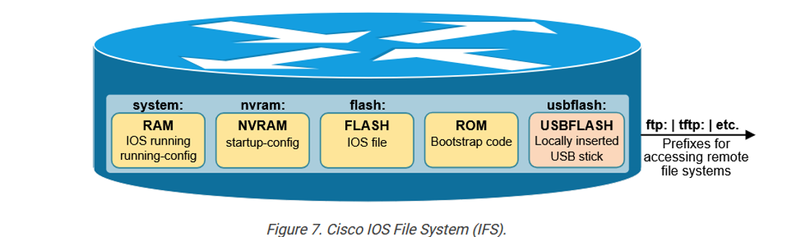
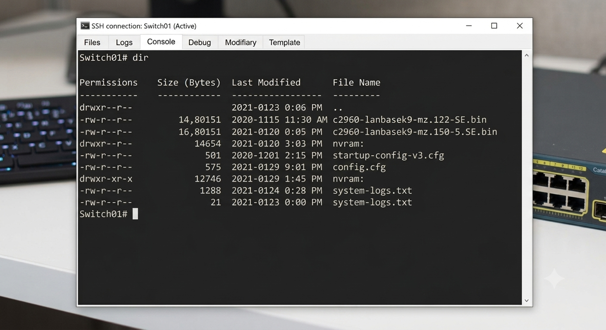
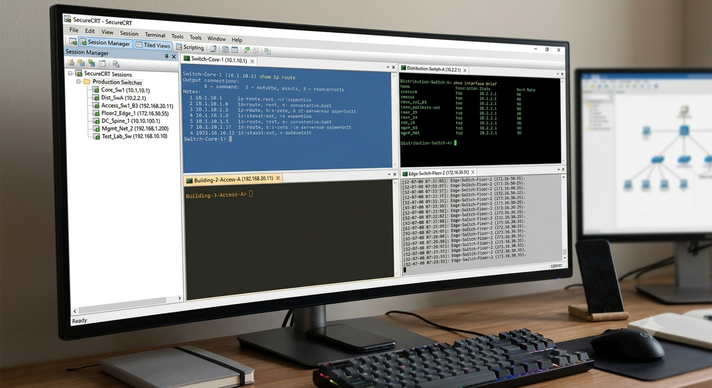
To recover from ROMMON, you must connect to the switch physically using a console cable and use the XMODEM protocol or the boot command to pull a new IOS image from a TFTP server.
2. Configuration File Management
A switch's configuration is separate from its OS. The configuration dictates how the ports behave, VLANs, routing, and security. There are two main config files:
- running-config: The active configuration currently running in the switch's RAM. Changes take effect immediately but are lost on reboot.
- startup-config: The saved configuration stored in NVRAM. The switch loads this file into RAM when it boots up.
It is critical to back up the startup-config to an external TFTP server before making major changes to the network.
Backup & Restore Commands
Switch# copy running-config startup-config
Switch# copy startup-config tftp:
Address or name of remote host []? 192.168.1.100
Destination filename [startup-config]? switch-backup-cfg.txt
Switch# copy tftp: running-config
Address or name of remote host []? 192.168.1.100
Source filename []? switch-backup-cfg.txt3. TFTP Server & IOS Transfers
TFTP (Trivial File Transfer Protocol) is a simple, lightweight protocol used by network admins to transfer IOS images and configuration files. Unlike FTP, TFTP does not require authentication and uses UDP port 69, making it fast for LAN transfers.
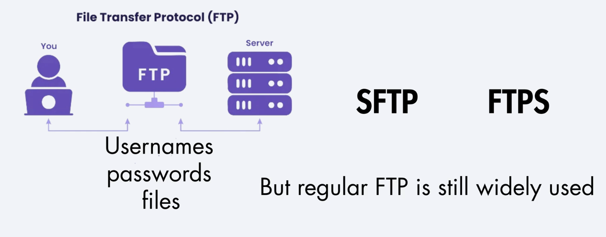
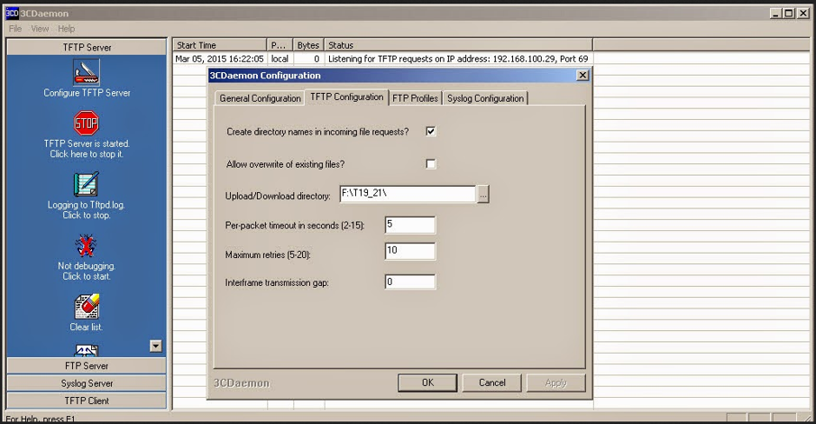
Upgrading the IOS Image
To upgrade or replace the IOS, you point the switch to the TFTP server and instruct it to copy the new .bin file into its flash memory.
Switch# copy tftp: flash:
Address or name of remote host []? 192.168.1.100
Source filename []? c2960-lanbasek9-mz.150-2.SE.bin
Destination filename [c2960-lanbasek9-mz.150-2.SE.bin]?
Switch(config)# boot system flash:c2960-lanbasek9-mz.150-2.SE.bin
Switch# reload4. Step-by-Step: IOS Recovery via TFTP Lab
This section walks through the complete hands-on process of recovering a crashed Cisco switch by downloading a fresh IOS image from a TFTP server. Follow each step in order.
Prerequisites Before You Start
- A Cisco switch that has crashed or has a corrupted/deleted IOS image
- A PC/laptop with a console cable (RJ45-to-USB) and an Ethernet cable
- 3CDaemon (or any TFTP server software like SolarWinds TFTP Server) installed on the PC
- The correct IOS .bin file downloaded from the Cisco vendor website
Physical Setup and Basic IP Connectivity
Before any file can be transferred, the switch and the PC must be physically connected, manually assigned IP addresses on the same subnet, and able to ping each other.
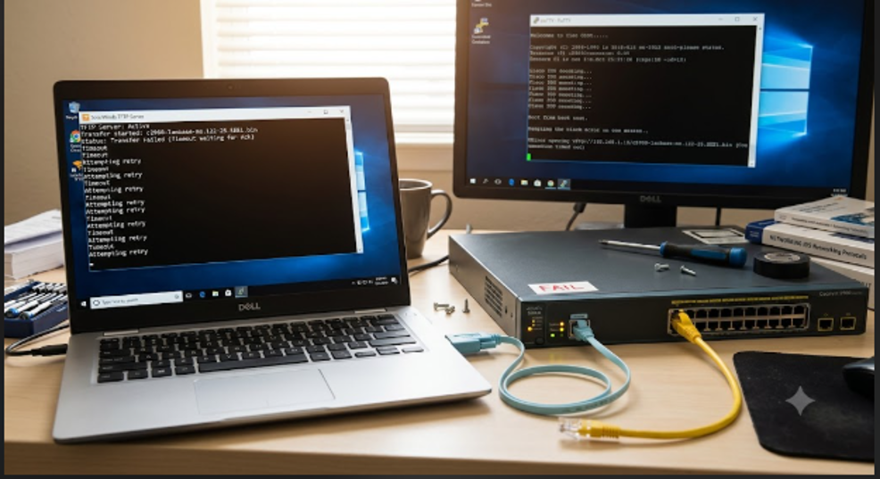
Open Control Panel → Network and Sharing Center → Change adapter settings. Right-click your Ethernet adapter → Properties → IPv4. Set a static IP (e.g., 192.168.1.100 / 255.255.255.0). Leave the gateway blank.
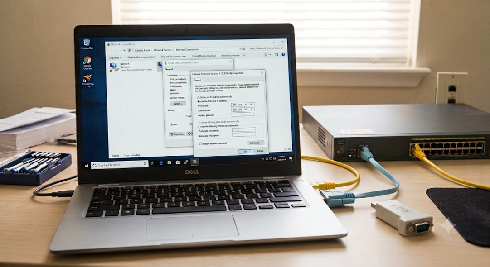
Log in via console (9600 baud, 8-N-1). Use show ip interface brief to find a Layer 3 interface (typically VLAN 1). Assign it an IP on the same subnet.
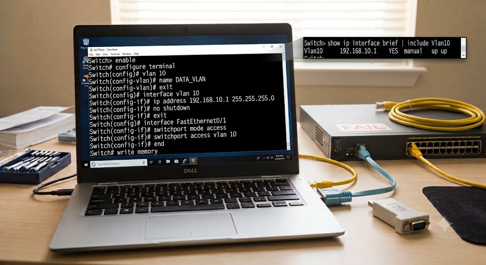
Switch> enable
Switch# configure terminal
Switch(config)# interface vlan 1
Switch(config-if)# ip address 192.168.1.1 255.255.255.0
Switch(config-if)# no shutdown
Switch(config-if)# exit
Switch# show ip interface brief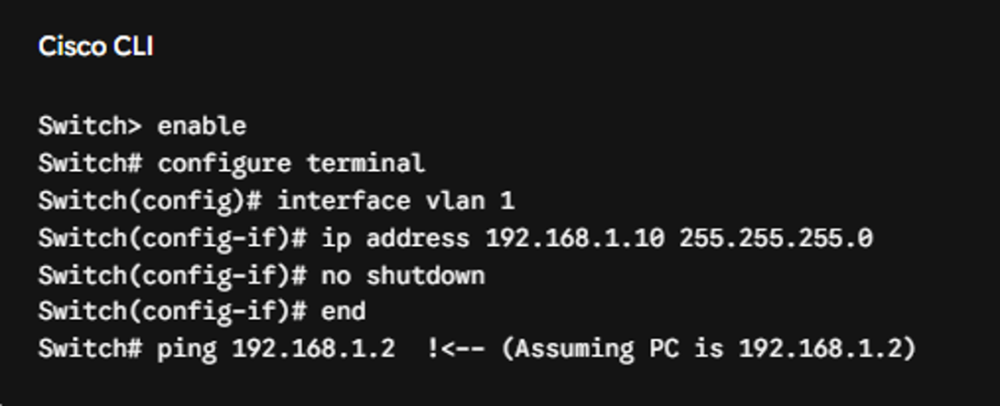
From the PC, ping the switch's VLAN IP. From the switch CLI, ping the PC's IP. Both must succeed.
C:\> ping 192.168.1.1
Switch# ping 192.168.1.100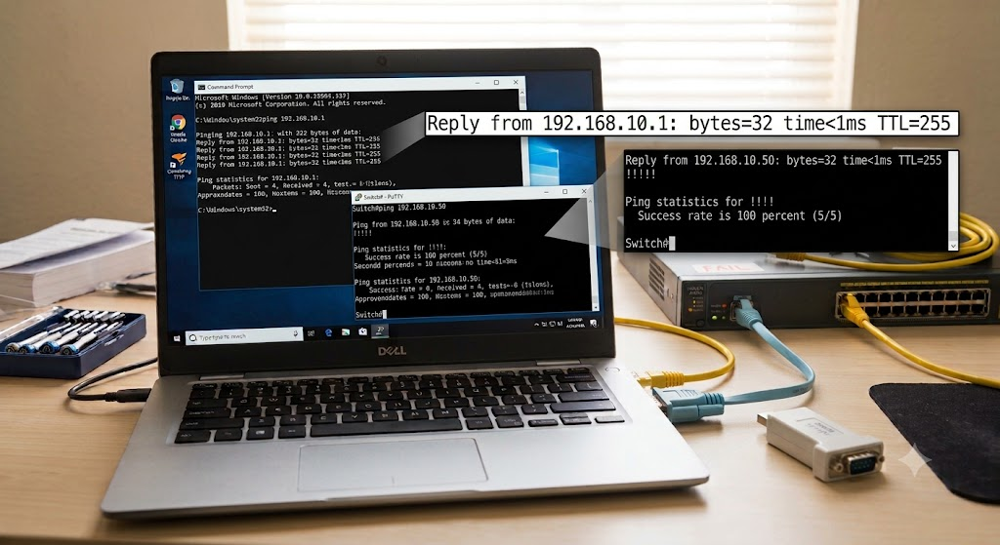
Preparing the TFTP Transfer and Initiating Copy
With connectivity confirmed, configure the TFTP server software on the PC with the correct file path, then instruct the switch to pull the IOS image.
Go to cisco.com → Support → Download Software. Search for your exact switch model. Download the correct .bin file to C:\TFTP_Root\.
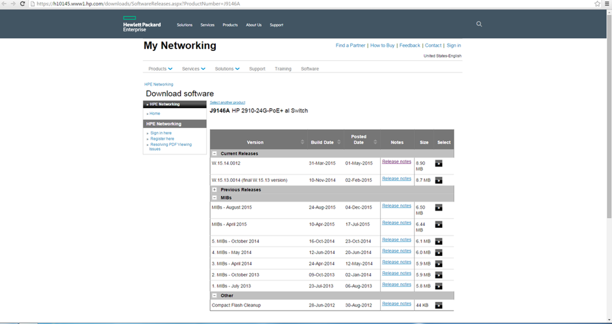
Critical: Match the Exact IOS Version
Downloading the wrong IOS image (wrong model, wrong feature set) will cause the switch to fail booting again. Always verify the part number matches your switch's show version output.
Open 3CDaemon. Click "TFTP Server" tab — ensure status shows Running. Click "Configure TFTP Server" and set the "Upload/Download Directory" to C:\TFTP_Root\.
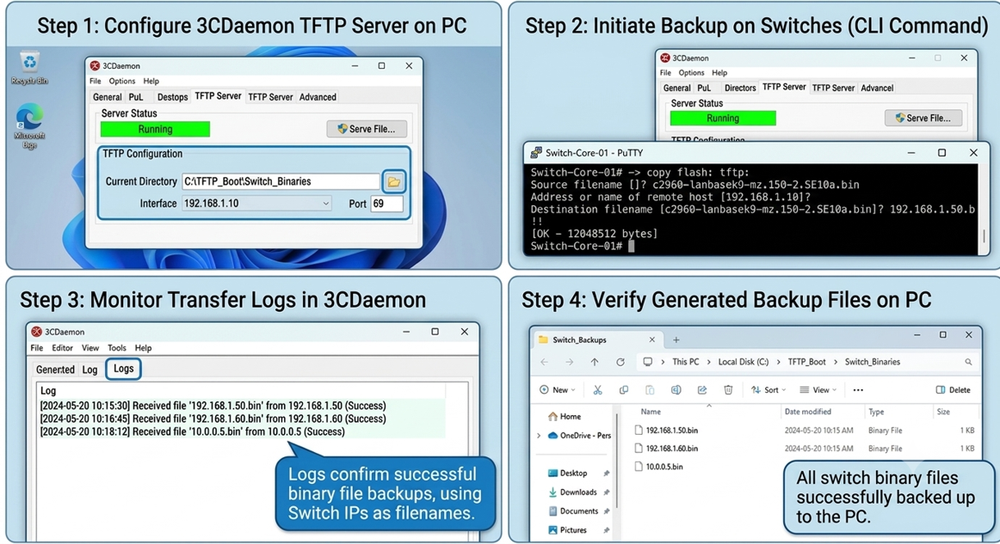
From the switch console, use copy tftp: flash:. Enter the PC's IP and the exact IOS filename.
Switch# copy tftp: flash:
Address or name of remote host []? 192.168.1.100
Source filename []? c2960-lanbasek9-mz.150-2.SE.bin
Destination filename [c2960-lanbasek9-mz.150-2.SE.bin]?
Accessing tftp://192.168.1.100/c2960-lanbasek9-mz.150-2.SE.bin...
!!!!!!!!!!!!!!!!!!!!!!!!!!!!!!!!!!!!!!!!!!!!!!!!!!!!!!!!!!!!!!!!!!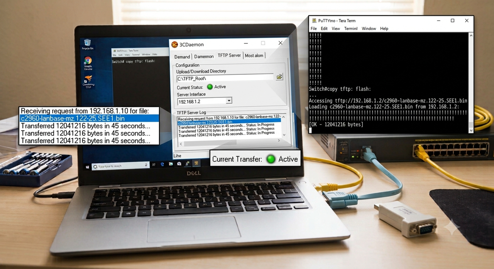
Verifying the Transfer and Booting the New Image
Monitor both the PC and the switch until the file is fully copied. Then verify integrity and configure the switch to boot from the new image.
On the switch console, each ! is a successfully received TFTP data packet. On the PC, 3CDaemon's log window scrolls with transfer activity.
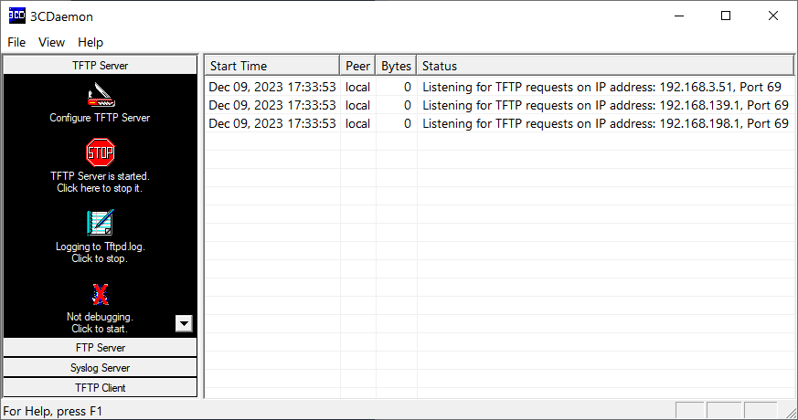
The switch will display [OK - xxxxxxx bytes]. The byte count must match the original file size on your PC. Use dir flash: to compare.
[OK - 11234567 bytes]
Switch# dir flash:
Directory of flash:/
1 -rw- 11234567 c2960-lanbasek9-mz.150-2.SE.bin
2 -rw- 104857 vlan.dat
32514048 bytes total (21279481 bytes free) Size Match Check
Right-click the original .bin file on your PC → Properties → compare the "Size" in bytes with dir flash: output. They must be identical. Even a 1-byte difference means a corrupted image.
Instruct the switch to boot from the new IOS image, save the configuration, and reload.
Switch# configure terminal
Switch(config)# boot system flash:c2960-lanbasek9-mz.150-2.SE.bin
Switch(config)# exit
Switch# copy running-config startup-config
Switch# show boot
Switch# reload
Proceed with reload? [confirm]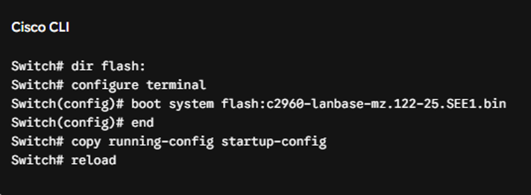
Troubleshooting Tips
- No !!! marks: Check PC firewall isn't blocking UDP port 69. Temporarily disable Windows Firewall.
- Transfer stalls: Verify Ethernet cable is seated. Try a different port.
- Size mismatch: Re-run the transfer. Try different TFTP software.
- Won't boot after reload: Enter ROMMON and manually boot: switch: boot flash:c2960-lanbasek9-mz.150-2.SE.bin
5. Switch Troubleshooting & Network Incidents
Beyond IOS recovery, network engineers routinely deal with hardware failures, speed mismatches between optics and cables, misconfigured VLANs, and protocol-level issues. This section covers the most critical real-world troubleshooting scenarios.
5.1 Switch Module Replacement
When a line card or blade module in a modular switch chassis fails, it must be identified, traffic drained safely, and replaced with an OEM-verified spare — all within a scheduled maintenance window to minimize downtime.
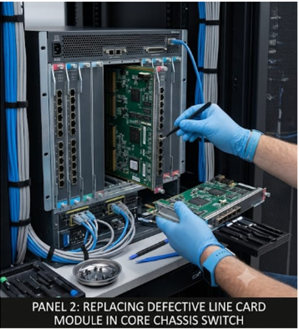
- System Log Diagnostics: Review syslog entries for persistent fabric interface errors, ASIC fatal faults, or port transceiver communication failures.
- Front Panel LED Indicators: Identify red or solid amber STATUS / FAIL LEDs on the target blade module panel.
- Graceful Traffic Drain: Reroute active VLAN traffic and drain core routing protocols (OSPF/BGP) away from card ports via CLI commands prior to extraction.
- Hardware Verification: Cross-check serial number, model identifier, and target slot ID in CLI output with spare inventory ticket.
! Check for hardware errors on the target module
Switch# show logging | include ASIC|FATAL|fabric|transceiver
Switch# show module | include
! Verify OSPF/BGP neighbor status on card ports before drain
Switch# show ip ospf neighbor
Switch# show ip bgp summary
! Shut down all ports on the failing card before extraction
Switch# configure terminal
Switch(config)# interface range gigabitEthernet /
Switch(config-if-range)# shutdown
Switch(config-if-range)# exit - Replacement Line Card: OEM verified replacement module inside sealed anti-static bag.
- Console Access: Admin laptop, USB-to-Serial console cable, and terminal emulator tool (PuTTY/Tera Term).
- Work Order: Pre-approved maintenance window authorization ticket and backup switch config files.
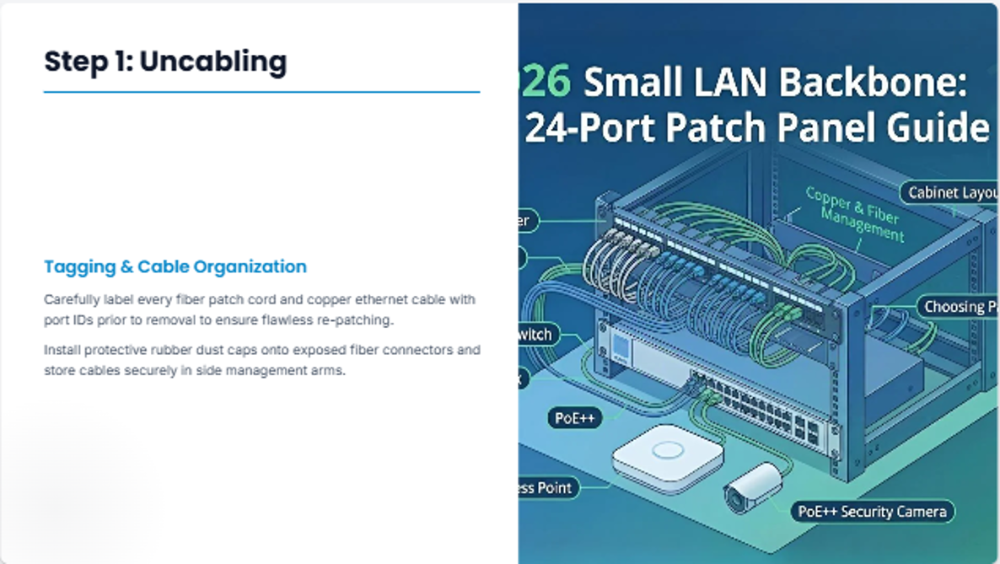
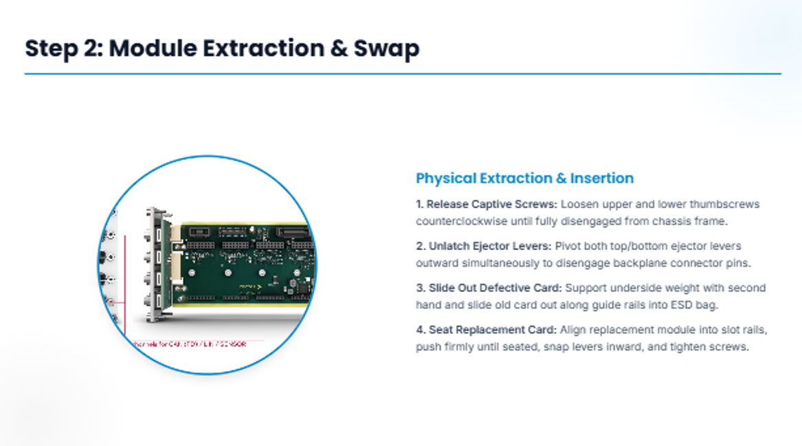
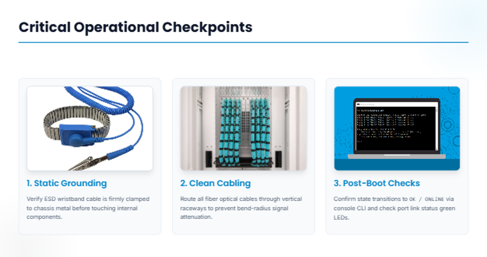
! After physical insertion, verify the new module is recognized
Switch# show module
Switch# show hardware
! Re-enable ports and verify traffic
Switch# configure terminal
Switch(config)# interface range gigabitEthernet /
Switch(config-if-range)# no shutdown
! Verify routing protocols have re-established
Switch# show ip ospf neighbor
Switch# show ip bgp summary 5.2 SFP Module & Fiber Cable Speed Mismatches
Speed mismatches occur when the SFP transceiver, the fiber optic cable, and the switch port configuration do not agree on the same link speed and duplex settings. This causes the link to flap, drop packets, or fail to come up entirely.
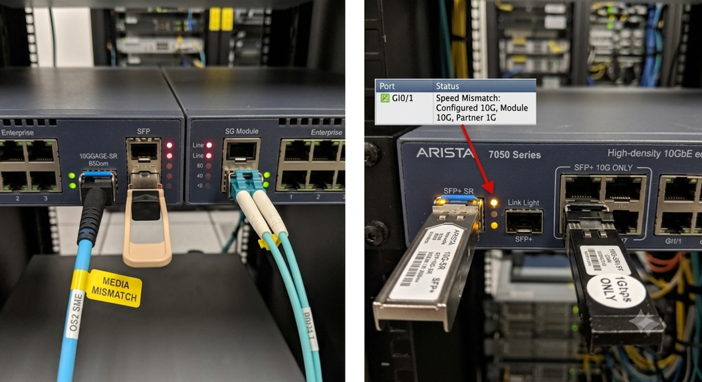
- SFP Module Speed Mismatch: Inserting a 1G SFP into a port configured for 10G, or vice versa. The port will show err-disabled or stay down.
- Fiber Cable Speed Mismatch: Using a multi-mode fiber (OM1/OM2) cable for a long-distance single-mode SFP link — the signal degrades and CRC errors spike.
- Duplex Mismatch: One side hardcoded to full-duplex while the other auto-negotiates to half-duplex. Causes late collisions and severe packet loss.
! Check the SFP module details and supported speed
Switch# show interface transceiver details
Switch# show inventory
! Check for CRC errors, alignment errors, or late collisions
Switch# show interfaces gigabitEthernet 0/1 | include errors|CRC|collisions
! Verify speed and duplex settings on both ends
Switch# show interfaces status
Switch# show interfaces gigabitEthernet 0/1 | include speed|duplex
! Manually set correct speed and duplex if auto-negotiation fails
Switch# configure terminal
Switch(config)# interface gigabitEthernet 0/1
Switch(config-if)# speed 1000
Switch(config-if)# duplex full
Switch(config-if)# no shutdown
Golden Rule of SFP Compatibility
Always match three things: SFP type (SX/LX/LR/T), cable type (single-mode fiber / multi-mode fiber / copper DAC), and port speed configuration. Mismatching any one of these will cause link failures.
5.3 Backup Config.cfg Through TFTP
Before any hardware replacement, IOS upgrade, or major configuration change, you must back up the running configuration to an external TFTP server. This allows you to restore the switch to its exact previous state if anything goes wrong.
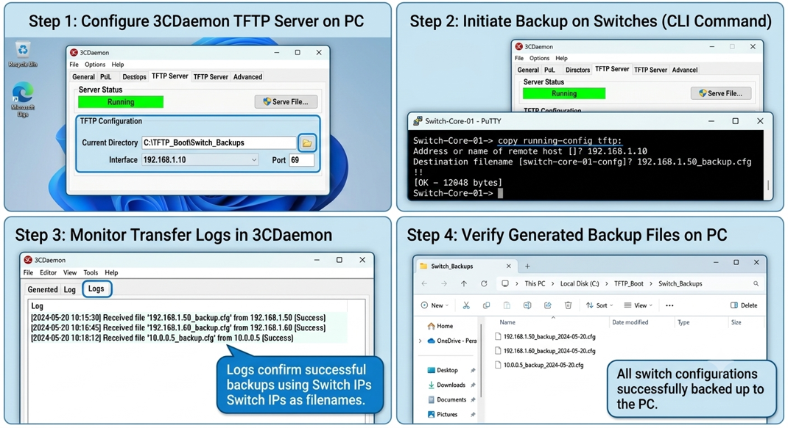
! Step 1: Save current running config to startup-config (NVRAM)
Switch# copy running-config startup-config
! Step 2: Backup the startup-config to TFTP server
Switch# copy startup-config tftp:
Address or name of remote host []? 192.168.1.100
Destination filename [startup-config]? Switch-Core-01-backup-2025-01-15.cfg
!!
11234 bytes copied in 0.5 secs
! Step 3: Verify the backup file exists on the TFTP server
! (Check the TFTP server's upload directory for the .cfg file)
! Step 4: To restore the config from TFTP
Switch# copy tftp: startup-config
Address or name of remote host []? 192.168.1.100
Source filename []? Switch-Core-01-backup-2025-01-15.cfg
Destination filename [startup-config]?
!!
11234 bytes copied in 0.8 secs
! Step 5: Reload to apply the restored configuration
Switch# reload
Proceed with reload? [confirm]Best Practice: Timestamped Backups
Always include the switch hostname and date in the backup filename (e.g., Switch-Core-01-2025-01-15.cfg). This makes it easy to identify which backup corresponds to which change window and avoids overwriting previous backups.
5.4 The Management VLAN Incident
One of the most dangerous network incidents occurs when an unlabelled or misconfigured port assigned to the Management VLAN is physically accessible in an office workspace. This creates a direct bridge between untrusted user devices and the switch management plane.
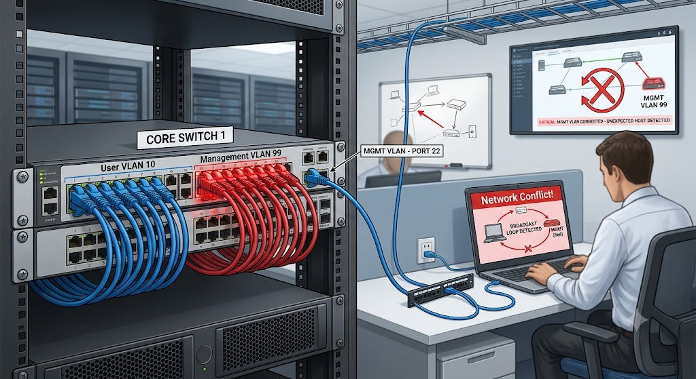
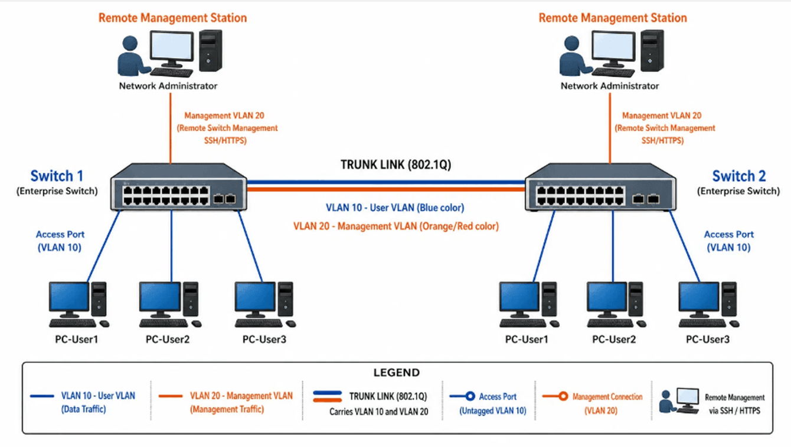
An unlabelled or misconfigured port assigned to VLAN 99 (or any management VLAN) is accessible in an office workspace. The port has no port-security, no 802.1X, and is not administratively shut down.
A user plugs a personal laptop or docking station into the Management VLAN port while simultaneously bridged to Wi-Fi or another physical network link. This creates an unauthorized bridge between segments.
- Unfiltered Access: The end host receives an IP in the management subnet (via DHCP) or sends untagged frames directly to the management bridge — gaining access to all switches, routers, and possibly firewalls on that VLAN.
- Layer 2 Loop Formation: Dual-homed adapters bridge traffic between the User segment and Management segment. This creates a spanning-tree loop that generates a broadcast storm, flooding the management VLAN and potentially crashing all managed devices.
! Identify the loop — check for rapidly incrementing counters
Switch# show interfaces | include broadcast|CRC|errors
Switch# show spanning-tree detail | include blocking|forwarding|loop
! Find the offending port
Switch# show mac address-table
Switch# show interfaces status | include connected
! Immediate containment: shut down the suspicious port
Switch# configure terminal
Switch(config)# interface gigabitEthernet 0/15
Switch(config-if)# shutdown
! Verify the storm has stopped
Switch# show interfaces gigabitEthernet 0/15 | include errors
Switch# show logging last 50 | include STP|loop|stormCritical Security Impact
A Management VLAN breach gives an attacker direct access to the control plane of every network device. They can SSH/Telnet into switches, modify routing tables, disable ports, or deploy a persistent backdoor. This is why management ports must never be accessible from user workspaces.
Prevention Measures
- Label all management ports physically with red tape or "MANAGEMENT ONLY" tags
- Enable switchport mode access + switchport access vlan 99 + spanning-tree portfast edge bpduguard enable
- Enable 802.1X authentication on all user-facing ports
- Configure port-security with a maximum of 1 MAC address
- Use a dedicated, out-of-band management network (separate physical switches or VRF)
5.5 DHCP Conflict & APIPA Problem
When a DHCP server is unavailable, misconfigured, or overwhelmed, client devices fail to obtain an IP address and automatically assign themselves an APIPA (Automatic Private IP Addressing) address in the 169.254.x.x range. These devices can communicate with each other but cannot reach the network.

- Device shows IP address 169.254.x.x with subnet mask 255.255.0.0
- Device cannot ping the default gateway or any external host
- DHCP server down: The DHCP service crashed or the server is unreachable (VLAN issue, cable disconnected)
- DHCP scope exhausted: All IP addresses in the pool have been allocated — no free leases
- DHCP conflict: Two DHCP servers on the same VLAN handing out overlapping address ranges
- DHCP relay misconfigured: The switch's ip helper-address is pointing to the wrong server or missing
! Check if the switch is relaying DHCP requests correctly
Switch# show running-config | include helper
! Should show: ip helper-address
! Check for DHCP snooping conflicts
Switch# show ip dhcp snooping
Switch# show ip dhcp snooping binding
! Verify the DHCP server is reachable from the switch
Switch# ping
! Check interface status for the VLAN carrying DHCP
Switch# show ip interface brief | include
! On Windows client — force a new DHCP request
C:\> ipconfig /release
C:\> ipconfig /renew 
5.6 Network Time Protocol (NTP)
NTP synchronizes the clocks of all network devices to a common time source. Accurate time is critical for log correlation, certificate validation, scheduled tasks, and forensic investigation. Even a few seconds of drift between devices makes it impossible to reconstruct an attack timeline.
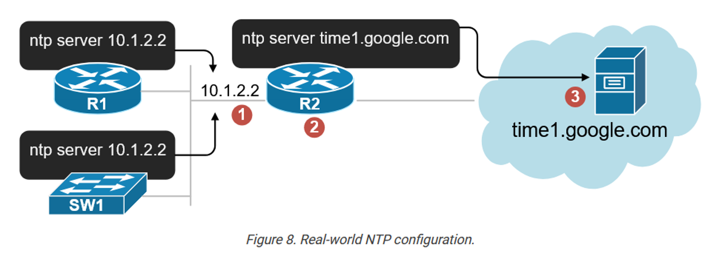
! Configure the switch to use an NTP server
Switch# configure terminal
Switch(config)# ntp server 10.0.0.1 prefer
Switch(config)# ntp server 10.0.0.2
! Set the local timezone
Switch(config)# clock timezone EET 2 0
! Verify NTP synchronization status
Switch# show ntp status
Switch# show ntp associations
! Manually set the clock if NTP is not yet synced (temporary)
Switch# clock set 15:30:00 15 January 2025Why NTP Matters for Security
When analyzing a breach, you correlate logs from firewalls, switches, IDS/IPS, and servers. If their clocks are not synchronized, you cannot determine the exact sequence of events. Always configure at least two NTP servers for redundancy and use authenticated NTP (NTPv4 with symmetric key authentication) to prevent time-spoofing attacks.
5.7 System Logging (Syslog)
Syslog is the standard protocol (UDP port 514) for sending event log messages from network devices to a centralized log server. Without centralized logging, you must log into each device individually to investigate incidents — which is impractical in any network larger than a few switches.
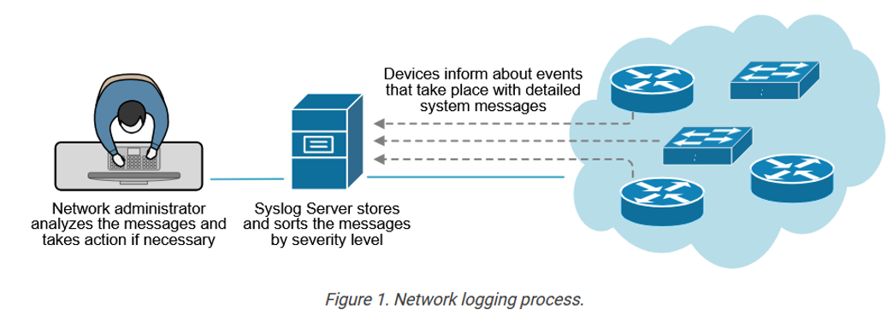
! Configure the switch to send logs to a syslog server
Switch# configure terminal
! Set the syslog server IP
Switch(config)# logging host 192.168.1.50
! Set the logging severity level (0=emergency to 7=debug)
! Level 4 = warnings and above (warnings, errors, critical, alerts, emergencies)
Switch(config)# logging trap warnings
! Set the source interface for syslog messages
Switch(config)# logging source-interface vlan 1
! Enable timestamps on log messages
Switch(config)# service timestamps log datetime localtime
! Verify syslog configuration
Switch# show logging- 0 — Emergency: System unusable
- 1 — Alert: Immediate action needed
- 2 — Critical: Critical condition
- 3 — Error: Error condition
- 4 — Warning: Warning condition (recommended minimum for production)
- 5 — Notification: Normal but significant
- 6 — Informational: Informational message
- 7 — Debug: Debug messages (verbose — not recommended in production)
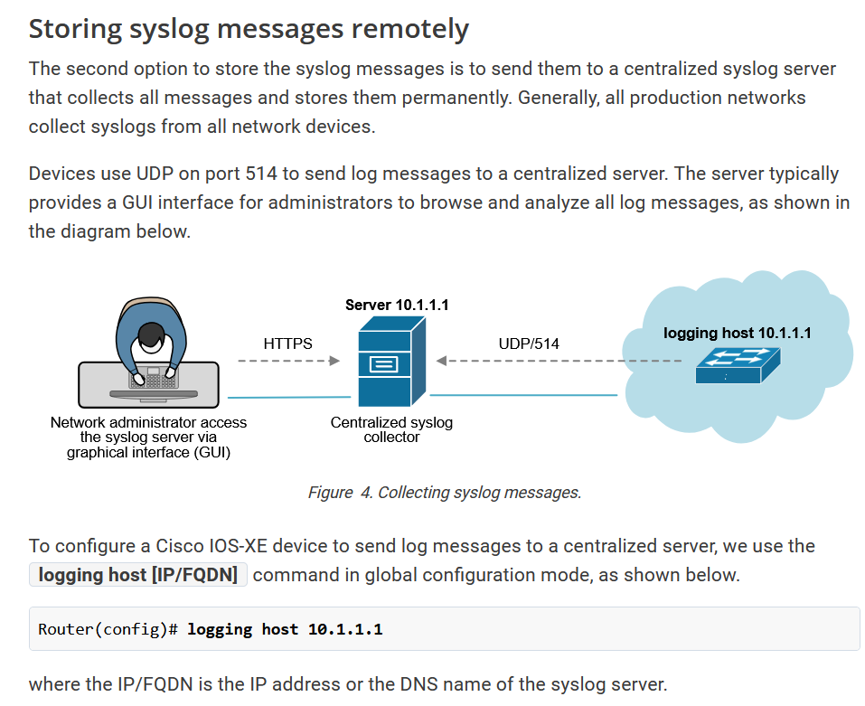
5.8 Simple Network Management Protocol (SNMP)
SNMP enables network monitoring platforms (like PRTG, SolarWinds, Zabbix) to poll switches and routers for status information: CPU usage, memory, interface traffic, port status, and error counters. SNMP uses Managers (monitoring server) and Agents (the switch) communicating over UDP port 161.
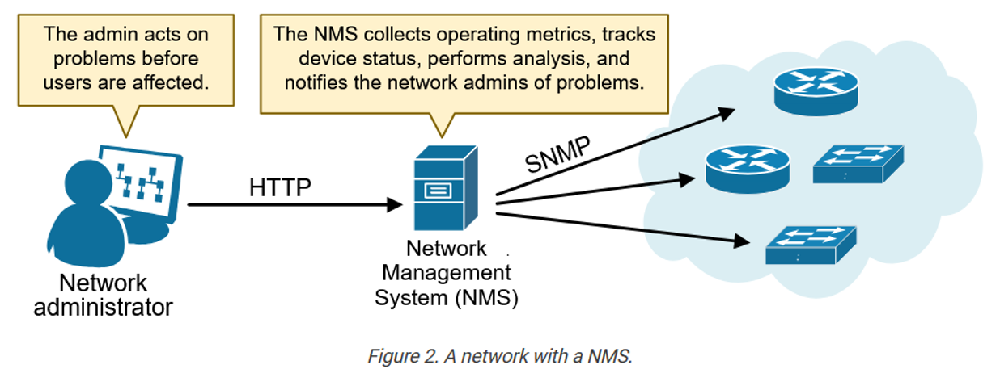
- v1/v2c: Uses community strings (plain-text passwords). NEVER use in production — anyone who guesses the community string (often "public"/"private") can read or modify all device configurations.
- v3: Uses USM (User-based Security Model) with authentication (MD5/SHA) and encryption (DES/AES). Always use SNMPv3 in production networks.
! ===== SNMPv2c (LEGACY — only for isolated lab environments) =====
Switch# configure terminal
Switch(config)# snmp-server community ReadOnlyString RO
Switch(config)# snmp-server community ReadWriteString RW
! ===== SNMPv3 (RECOMMENDED FOR PRODUCTION) =====
Switch# configure terminal
! Define an SNMP view (what the user can see)
Switch(config)# snmp-server view READONLY iso included
! Create an authentication-only user (can read data, no encryption)
Switch(config)# snmp-server user netadmin AuthGroup v3 auth sha MySecretPass123
! Create an authenticated + encrypted user (full security)
Switch(config)# snmp-server user netadmin SecureGroup v3 auth sha MySecretPass123 priv aes 256 MyEncKey456
! Set the contact and location info (visible in SNMP queries)
Switch(config)# snmp-server contact admin@company.com
Switch(config)# snmp-server location "Data Center - Rack A3"
! Restrict which hosts can query SNMP
Switch(config)# snmp-server host 192.168.1.50 version 3 SecureGroup
! Verify SNMP configuration
Switch# show snmp
Switch# show snmp user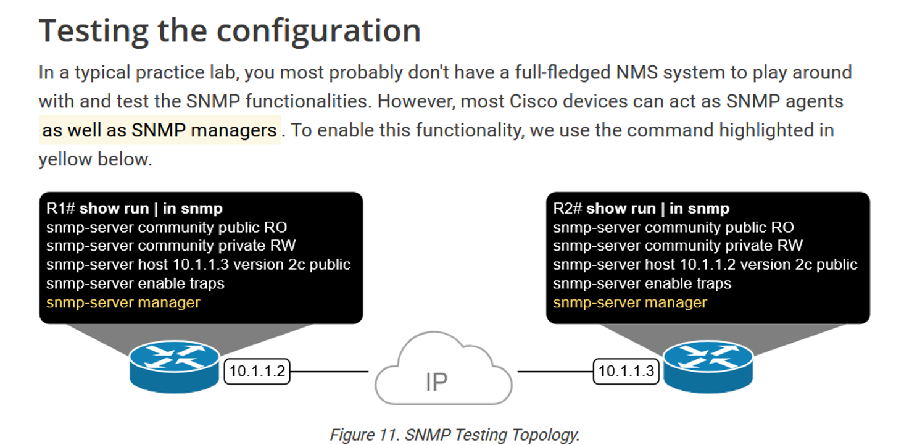
SNMPv2c is a Critical Vulnerability
Many large-scale breaches have started with an attacker scanning for SNMPv2c community strings. Once found, they can enumerate every interface, VLAN, routing table, and password hash on the device. If you inherit a network using SNMPv2c, migrate to v3 immediately as part of your hardening checklist.